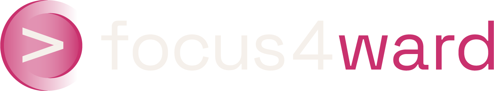

The 2027 plan says: €3M ARR at the end of 2026, €7M at the end of 2027. This page turns that company goal into marketing numbers, in three steps: how many demos the plan needs, where demos come from, and what it costs. Every figure is Actionable's own data (S1 2026 review, ARR plan) or a named benchmark. These are ranges, not promises: we recalibrate on the first 30-60 days of real activity.
Enterprise accounts don't fill demo forms. The unit that matters is the demo booked: by a rep, at an event, through a partner, always marketing-touched. S1 2026 gives the real conversion chain:
| Stage | S1 2026 actual | Rate | 2027 needs, at the same rates |
|---|---|---|---|
| Demos booked (any origin) | 50 · ~25 /qtr | — | ~55–70 /qtr |
| Opportunities | 19 · €1.57M pipeline | 38% of demos | ~20–26 /qtr |
| Signatures | 5 new logos | 26% of opps · 10% of demos | ~6 /qtr |
Read the right-hand column honestly: 2.7x more demos with the same motion is not a plan. The gap closes on three levers at once, and marketing touches all three. Bigger deals: work the 80 Tier 1-2 accounts only (the plan already models €105K against €82K actual). Better conversion: outbound converts 11% cold; it converts differently on an account that has already seen Actionable three times. More demos: the touch-point machine below.
One list of 80 accounts, several touch points hitting it at once. The warmest accounts get touched two or three times: event, then LinkedIn, then a rep. That repetition, not any single channel, is what books the demo.
| Touch point | Today (S1 2026) | Role in 2027 | What the money does |
|---|---|---|---|
| Events | 47% of opps | The anchor. Monaco alone booked 16 demos. Capped by the calendar, so it can't carry the whole plan | ~€35K committed (Sept 23 + Biarritz). Media before, during and after each event multiplies what it already produces |
| Partners + channel (Les Sabliers, Ipsos, Havas) | 32% of opps | Target: 40-45% of the mix | Marketing arms them: co-branded proof, category content they can carry into their own accounts |
| Outbound (rep sequences) | 11% of opps · 11% conversion | The scaling bet: 30-40% of the mix, with 2 new AEs from late September | Sequences land after the account has seen Actionable 2-3 times. Warming the 80 is the whole point of the media line below |
| LinkedIn ABM media on the 80 | new | 3–6 demos in the first full quarter, then 5–9 per quarter | €5-10K/month in 3-4 clusters of 15-25 accounts, ads fronted by Nicolas rather than the company page. Direct "saw the ad, booked a demo": 0-2 per quarter, and that's normal in category creation |
| Search + AI answers | ~0 today | The 2027 compounder. Nobody searches the category yet | Category content + the page that names it, so the demand being created has somewhere to land. Until search exists: brand and competitor terms only |
| Line | Fourchette (HT) | What it buys |
|---|---|---|
| Senior freelance, product marketing + content | €800–1,200 /day | One hire instead of two. Feeds everything: site, campaigns, case studies, category content, ad copy |
| Video production | €3–5K /film | Case-study and category films, start with 2-3 |
| Design | €1.5–2K /month | Sales collateral, web, product illustrations, event materials, ad creative |
| Paid media management | €1.5–1.7K /month | Day-to-day LinkedIn Ads ops: audiences, reporting, creative iteration |
| Event support | €600–1,000 /day | Commercial prep, on-site manpower, follow-up per event |
| Committed events | ~€35K | Sept 23 (~€10K) + Biarritz (~€25K), unchanged from the proposal |
| LinkedIn media (the 80) | €5–10K /month | The ABM line above. Start at €7.5K; cap set together before launch |
| PR agency, Paris | €3–7K /month | Retainer from launch |
| Marketing tooling | ~€500 /month | The GTM stack: SEMrush, AI-visibility tracking |
| 2027 items | on the table, not now | US PR €6-14K/month when the US stream opens · rebrand + new site €30-300K via a proper agency shortlist · domain, separate decision |
The line-by-line logic sits in the budget page already shared. Week one of the engagement: the same budget rebuilt backwards from the numbers on this page, with real quotes, approved line by line before anything is spent.
Three conditions, all decided before launch. One: when an account shows engagement, someone in sales acts on it within 48h. Without that owner, the ABM line falls to 1-2 demos per quarter and no media budget compensates. Two: what counts as a "demo booked" is written down and agreed before the first euro is spent, so December debates performance, not definitions. Three: the ramp is respected. Months 1-2 are setup and first signals; honestly attributable demos start months 3-4. With a 6-month sales cycle, the first ABM-attributable signature lands around Q2 2027. Sept-Dec builds pipeline, not revenue.
France only. Every number on this page is a France number. The US will convert lower and start smaller: more competitors, a brand nobody knows yet. When the US stream opens, it gets its own version of this page with its own assumptions, not a copy of this one.
The spend → output answer. At cruising speed, the ABM line costs ~€90K a year of media and produces 2-3 signatures a year: ~€200-250K of new ARR that then renews. The Sept-Dec slice costs €25-35K and produces pipeline for Q1-Q2 2027 signatures. A demo count gets debated every month. The economics don't.
Actionable data: Bilan Sales/GTM S1 2026 · 2027 ARR Plan v3 (July 2026 working session). Benchmarks: ABM corridor, engagement mechanics and ramp validated 2026-08-28 with the LinkedIn-ABM specialist lined up for execution; ITSMA / Forrester / Demandbase ABM aggregates 2025-26.
